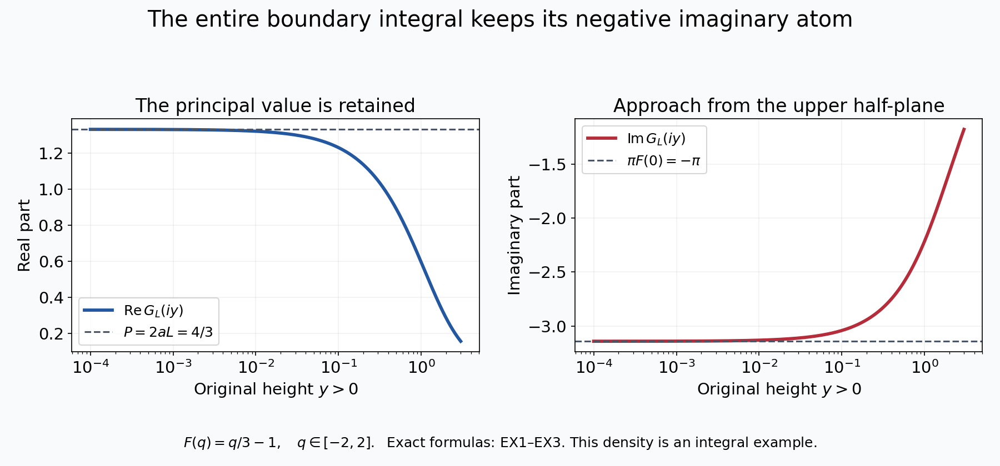
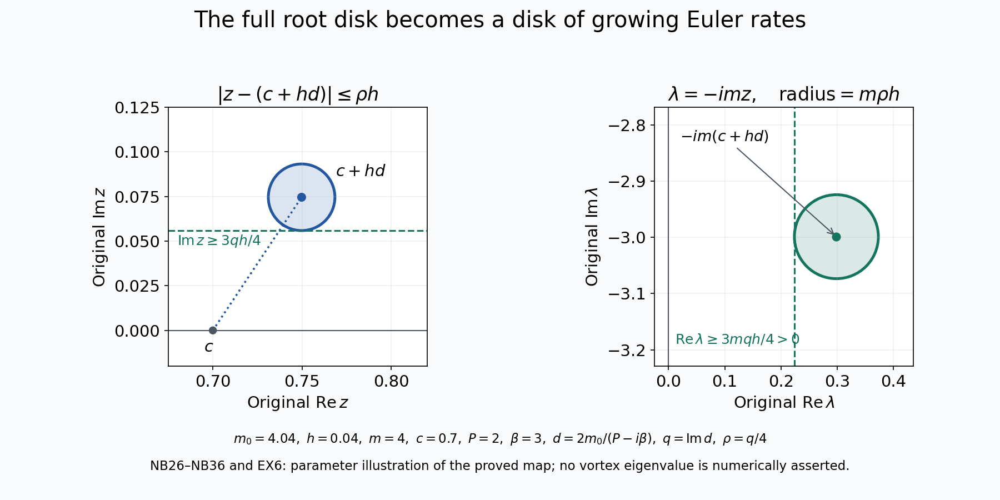

An unstable Euler vortex with an integer mode
Lesson 29 constructed a smooth radial Euler background, its exact radial inverse and a simple negative eigenvalue of the associated self-adjoint operator. Here we construct an actual growing Euler mode whose angular frequency is an integer.
The proof has three parts. First we calculate the exact boundary value of the original singular integral, including the sign from the decreasing coordinate. Next we solve the full equation near a neutral mode and prove that its scalar equation has a zero in the upper half-plane. Finally we make the bounds uniform over the constructed family and select an integer angular frequency. The original Euler generator, physical velocity, vorticity, pressure and time remain explicit.
Keep the original smooth profiles \(\Xi,A,g,\bar\alpha\) from lesson 29, where \(A=\Xi''+2\Xi'\), \(0<\bar\alpha<1\), \(a=0\) and \(c=\Xi(a)\). Set \(m_0=\sqrt{\lambda_a}>1\), and let \(\varphi_0>0\) be the actual unit-\(L^2(dt)\) ground state constructed in VA28. Put \(K=A/(\Xi-c)\), including its proved smooth value at the removable point. No unstable mode is assumed in these starting data.
The human source is Dallas Albritton, Elia Brué, Maria Colombo, Camillo De Lellis, Vikram Giri, Maximilian Janisch and Hyunju Kwon, Instability and nonuniqueness for the 2d Euler equations in vorticity form, after M. Vishik, arXiv:2112.04943v4, original linear-2.tex 303–428, 515–668, 978–1387 and 1471–1556. Vishik's original construction is credited through this seven-author TeX treatment. The receiving forced-fluid argument is Dallas Albritton, Elia Brué and Maria Colombo, Non-uniqueness of Leray solutions of the forced Navier–Stokes equations, arXiv:2112.03116v1, original main.tex 755–989.
The family selection in NB7 supplies an alternative argument for the integer mode needed here. Every local estimate and the entire selection are proved below. The source's stronger global continuation statement for every intermediate real angular parameter is not used as an assumption. Visible source corrections concern the boundary atom, endpoint signs and the compactness argument for the free inverse. The final five exercises give exact integral and kernel examples, the complete physical disk map, origin coefficients and sharp ranges for higher spatial moments. This exposition has an author self-check; no independent review or novelty claim is asserted.
NL1. The exact free inverse, its sign and both endpoint amplitudes
For every original \(m>0\), the kernel
\[ \Gamma_m(t)=\frac{e^{-m|t|}}{2m} \tag{NL1} \]has continuous value at zero and derivative jump \(-1\). Thus \(-\Gamma_m''+m^2\Gamma_m=\delta_0\) in distributions. Its \(L^1\) norm is \(m^{-2}\); its squared \(L^2\) norm is \(1/(4m^3)\). Hence for \(f\in L^2(dt)\) its convolution belongs to \(L^2\), is bounded, and solves the original inhomogeneous equation. Its second derivative belongs to \(L^2\), so Fourier transformation gives \(H^2\). Any other \(L^2\) solution differs by \(C_1e^{mt}+C_2e^{-mt}\), forcing both coefficients zero.
Apply this to the actual ground-state equation \(-\varphi_0''+m_0^2\varphi_0=-K\varphi_0\). The complete identity is
\[ \begin{aligned} \varphi_0(t)=-\frac1{2m_0}\Big[ e^{m_0t}\int_t^\infty e^{-m_0s}K(s)\varphi_0(s)\,ds +e^{-m_0t}\int_{-\infty}^t e^{m_0s}K(s)\varphi_0(s)\,ds\Big]. \end{aligned} \tag{NL2} \]Both terms have the same negative sign.
VA20–VA21 and the removable-point construction show \(K(t)=O(e^{2t})\) as \(t\to-\infty\), and \(K(t)=O(e^{-\bar\alpha t})\) as \(t\to+\infty\). The Volterra proof VA7–VA9 applied to \(K(t)\) on the right and to \(K(-t)\) on the reflected left gives a decaying and a growing basis at each endpoint. The bounded \(H^2\) ground state has zero growing coefficient at both endpoints. Its decaying coefficient at either end cannot vanish, since that would make it zero on an entire tail and then everywhere by ODE uniqueness. Positivity makes both remaining coefficients strictly positive. In particular
\[ \begin{aligned} \varphi_0(t)&=C_-e^{m_0t}(1+o(1))\quad(t\to-\infty),\\ \varphi_0(t)&=C_+e^{-m_0t}(1+o(1))\quad(t\to+\infty),\\ C_-&=-\frac1{2m_0}\int_{\mathbb R} e^{-m_0s}K(s)\varphi_0(s)\,ds>0,\\ C_+&=-\frac1{2m_0}\int_{\mathbb R} e^{m_0s}K(s)\varphi_0(s)\,ds>0. \end{aligned} \tag{NL3} \]To obtain these integrals from NL2, use the just-proved decay. Both full integrands are absolutely integrable. At the left endpoint the other term, after multiplication by \(e^{-m_0t}\), is \(O(e^{2t})\); at the right endpoint the corresponding term is \(O(e^{-\bar\alpha t})\). Thus both limits retain every contribution with its actual sign.
NL2. Keep the orientation in the boundary-value integral
The function \(\Xi\) decreases smoothly from \(X_-=\Xi(-\infty)\) to zero, with \(\Xi'<0\). The original change of variable
\[ q=\Xi(t)-c,\qquad t=\tau(q),\qquad I=(-c,X_--c),\qquad |dt|=\frac{dq}{|\Xi'(\tau(q))|} \tag{NL4} \]is a bijection with reversed orientation. The positive measure in the transformed integral therefore uses the absolute value of the derivative. Set
\[ W(t)=K(t)\varphi_0(t)^2,\qquad F(q)=\frac{W(\tau(q))}{|\Xi'(\tau(q))|}. \tag{NL5} \]This \(F\) is smooth in the interior of \(I\), including zero. It is integrable: its \(L^1(dq)\) norm is exactly \(\int_{\mathbb R}|W(t)|dt<\infty\). At zero its exact value is
\[ F(0)=\frac{A'(a)\varphi_0(a)^2} {\Xi'(a)|\Xi'(a)|} =-\frac{A'(a)\varphi_0(a)^2}{\Xi'(a)^2}<0 . \tag{NL6} \]No sign of the decreasing coordinate map has been absorbed.
For \(\varepsilon>0\), changing variables in the original upper-half-plane integral gives
\[ \begin{aligned} G(c+i\varepsilon) &:=\int_{\mathbb R}\frac{W(t)}{\Xi(t)-c-i\varepsilon}\,dt\\ &=\int_I\frac{F(q)}{q-i\varepsilon}\,dq\\ &=\int_I\frac{qF(q)}{q^2+\varepsilon^2}\,dq +i\int_I\frac{\varepsilon F(q)}{q^2+\varepsilon^2}\,dq . \end{aligned} \tag{NL7} \]These are absolutely convergent for every positive \(\varepsilon\).
Choose \(\delta=\frac12\min\{c,X_--c\}>0\). On \([-\delta,\delta]\) let \(L_F\) be any finite one-half Hölder constant for \(F\); for example \(\sqrt{2\delta}\sup|F'|\). For \(j=2,3\) put \(I_j=\int_{I\setminus[-\delta,\delta]}|F(q)|\,|q|^{-j}dq\). Both are finite by integrability and the excluded neighborhood.
The principal value \(P=\operatorname{PV}\int_I F(q)/q\,dq\) exists: on the symmetric middle interval the constant cancels and the remaining quotient is bounded by \(L_F|q|^{-1/2}\). For \(0<\varepsilon\leq\delta\), direct estimates give
\[ \begin{aligned} |\operatorname{Re}G(c+i\varepsilon)-P| &\leq\frac{16L_F}{3}\sqrt\varepsilon +\varepsilon^2 I_3,\\ |\operatorname{Im}G(c+i\varepsilon)-\pi F(0)| &\leq\frac{16L_F}{3}\sqrt\varepsilon +\frac{2|F(0)|\varepsilon}{\delta} +\varepsilon I_2. \end{aligned} \tag{NL8} \]Here are the full middle-interval estimates. In the real part the difference kernel is \(-\varepsilon^2/[q(q^2+\varepsilon^2)]\). The constant \(F(0)\) cancels by oddness. The remainder is bounded by \(2L_F\varepsilon^2\int_0^\delta q^{-1/2}(q^2+\varepsilon^2)^{-1}dq\). After \(q=\varepsilon s\), its dimensionless integral is at most \(\int_0^1s^{-1/2}ds+\int_1^\infty s^{-5/2}ds=8/3\). For the imaginary remainder the bound is \(2L_F\varepsilon\int_0^\delta q^{1/2}(q^2+\varepsilon^2)^{-1}dq\). Its dimensionless integral is at most \(\int_0^1s^{1/2}ds+\int_1^\infty s^{-3/2}ds=8/3\). The constant term integrates exactly to \(2F(0)\arctan(\delta/\varepsilon)\), whose difference from \(\pi F(0)\) is at most \(2|F(0)|\varepsilon/\delta\). On the remaining set the real and imaginary kernel differences are bounded by \(\varepsilon^2/|q|^3\) and \(\varepsilon/q^2\). This proves both full inequalities.
NL3. Permit every approach from the upper half-plane
The same boundary value holds as \(z=c+x+iy\to c\) with \(y>0\), without restricting the ratio \(x/y\). To prove this, choose a smooth cutoff \(\rho\) supported strictly inside \(I\), equal to one near zero. The contribution from \((1-\rho)F\) converges by dominated convergence, since its support stays away from the limiting singularity. Extend \(F_0=\rho F\) by zero to \(\mathbb R\); it is a smooth compactly supported function.
In the local integral substitute \(q=x+u\). The proof of NL8 now applies to \(F_0(x+u)\), with constants bounded uniformly for sufficiently small \(x\), using a fixed symmetric middle interval in \(u\). Thus its imaginary part differs from \(\pi F_0(x)\) by a quantity tending to zero uniformly as \(y\downarrow0\). Its real part differs uniformly from \(\operatorname{PV}\int F_0(x+u)/u\,du\) by a quantity tending to zero. The latter principal value is continuous in \(x\): on \(|u|\leq\delta\) subtract \(F_0(x)\) and dominate the divided difference by \(\sup|F_0'|\); on \(|u|>\delta\) use compact support and a fixed integrable majorant. Dominated convergence proves continuity of both pieces. Restoring the far contribution gives the exact limit
\[ \begin{aligned} \lim_{\substack{z\to c\\\operatorname{Im}z>0}}G(z) &=P+i\pi F(0)=P-i\beta,\\ \beta&=\frac{\pi A'(a)\varphi_0(a)^2}{\Xi'(a)^2}>0 . \end{aligned} \tag{NL9} \]The principal value can equivalently be computed with symmetric exclusions in \(t-a\). Indeed \(\Xi(a+s)-c=\Xi'(a)s+O(s^2)\); the ratio of the two induced positive cutoff magnitudes tends to one. The constant singular term changes by a constant times the logarithm of that ratio, tending to zero. The remainder is locally integrable. This proves the comparison of the two actual principal-value definitions.
NL4. Compute the exact tested residual and its first direction
For the actual ground state keep the full original Rayleigh operator
\[ \mathcal R_{m,z}\varphi =-\varphi''+m^2\varphi+\frac{A}{\Xi-z}\varphi . \tag{NL10} \]This notation is local to this calculation and does not identify it with the source's later integral remainder operator. The exact pointwise difference of the potentials is
\[ \frac{A}{\Xi-z}-\frac{A}{\Xi-c} =(z-c)\frac{K}{\Xi-z}. \tag{NL11} \]Since the original ground state has squared norm one, integration against \(\varphi_0\), using its actual equation, gives for every \(m>0\) and \(\operatorname{Im}z>0\)
\[ \begin{aligned} \int_{\mathbb R} (\mathcal R_{m,z}\varphi_0)\varphi_0\,dt &=m^2-m_0^2+(z-c)G(z),\\ m=m_0-h:\qquad &=-2m_0h+h^2+(z-c)G(z). \end{aligned} \tag{NL12} \]The full derivative \(2m_0\), the \(h^2\) term and the original spectral parameter have all been retained.
By NL9 the first-degree part of this exact scalar residual has its zero in the direction
\[ d_*=\frac{2m_0}{P-i\beta} =\frac{2m_0(P+i\beta)}{P^2+\beta^2}, \qquad \operatorname{Im}d_*=\frac{2m_0\beta}{P^2+\beta^2}>0 . \tag{NL13} \]The full source coefficient in linear-2.tex1314 is \(c(a)=-(P-i\beta)\), whose imaginary part is positive. Its convention \(m=m_0+h_{\rm src}\) has \(h_{\rm src}=-h\). Substitution gives exactly the same direction \(z-c=h d_*+o(h)\) at first degree.
This is a proved residual coefficient for the constructed original ground state. It is not yet a solution of the full nonreal eigenvalue equation. The next operation is to solve the complementary equation with the actual singular coefficient, establish its operator bounds, and apply the complex root argument with explicit disk geometry.
NL5. Source corrections already forced by the calculation
Original linear-2.tex378–394 prints the boundary atom with \(\Xi'(a)^{-1}\). The positive-measure Jacobian is instead \(|\Xi'(a)|^{-1}\), as proved in NL4–NL9. The later rigorous calculation at source1350 uses the latter correctly. Thus this is a correction of the informal expansion, not an inferred failure of the later instability argument.
Source595–600 prints the two endpoint integrals with positive signs, although its equation has right-hand side \(-K\varphi\). NL1–NL3 supply the full negative signs and both exact nonzero endpoint constants. The value of the negative-side \(A\) in source572 is also inconsistent with the actual class: VA20 gives \(A(t)=-8c_0e^{2t}\). In source625 the intermediate double integral has an extra minus sign; direct integration of source621 gives a positive double integral and the positive Volterra kernel stated thereafter. VA7–VA9 and NL1–NL3 already use the correctly differentiated kernels. These source fixes must be carried through the next full complementary-equation construction.
NB1. The original family and its actual ground states
Keep the family from VA31:
\[ \Xi_\sigma=(1-\sigma)\Xi_0+\sigma\Xi_1,\quad A_\sigma=\Xi_\sigma''+2\Xi_\sigma',\quad c_\sigma=\Xi_\sigma(0),\quad K_\sigma=\frac{A_\sigma}{\Xi_\sigma-c_\sigma}. \tag{NB1} \]The quotient uses its proved smooth value at zero. The original exponent \(0<\bar\alpha<1\), the zeros \(0,1/2\), both original tails and the complete circulation coefficient remain those of VA12–VA21. In particular \(\Xi_\sigma'(0)=-1\) for this family.
Let \(M\geq3\) and \(\sigma_0\in(0,1)\) be the integer and last level crossing in VA31–VA34. Thus the bottom eigenvalue of \(-d^2/dt^2+K_\sigma\) obeys
\[ \lambda_a(\sigma_0)=M^2,\qquad \lambda_a(\sigma)>M^2\quad(\sigma_0<\sigma\leq1). \tag{NB2} \]There is no assertion here that its derivative at the crossing is nonzero. The following construction needs only the proved strict inequality and continuity.
On a closed interval \(\Sigma\) about \(\sigma_0\), small enough to lie in \((0,1)\), let
\[ m_\sigma=\sqrt{\lambda_a(\sigma)},\qquad -\varphi_\sigma''+(m_\sigma^2+K_\sigma)\varphi_\sigma=0,\qquad \varphi_\sigma>0,\quad \|\varphi_\sigma\|_2=1 . \tag{NB3} \]These are the actual simple minimizing eigenfunctions from VA28, with the source's original unit-norm choice retained. VA33 first permits \(\Sigma\) to be chosen with \(M/2\leq m_\sigma\leq2M\). For example an initial radius less than
\[ \min\left\{\frac{\sigma_0}{2},\frac{1-\sigma_0}{2}, \frac{M^2}{4(1+C_a)}\right\} \tag{NB4} \]suffices; it may subsequently be reduced.
We prove the continuity needed below. If \(\sigma_n\to\sigma\), the unit minimizers are bounded in \(H^1\). The local compactness and vanishing-potential-tail argument in VA28 gives convergence of the potential integrals along every weakly convergent subsequence. The limiting variational value is strictly negative and the potentials converge in the supremum norm by VA33. The same negative-energy argument therefore prevents loss of \(L^2\) norm. The weak limit is the unique positive unit ground state, so the whole family converges strongly in \(L^2\). Its equation then gives
\[ \varphi_{\sigma_n}''= (m_{\sigma_n}^2+K_{\sigma_n})\varphi_{\sigma_n} \longrightarrow (m_\sigma^2+K_\sigma)\varphi_\sigma \quad\hbox{in }L^2. \tag{NB5} \]Fourier transformation gives convergence in \(H^2\), hence uniform convergence of both the function and its first derivative. Locally the equation and the smooth quotient formulas bootstrap this to convergence with any fixed number of derivatives.
The two endpoint constructions NL1–NL3 are uniform on this closed parameter interval. Indeed the original exponential tails of \(K_\sigma\) have common bounds, and \(m_\sigma\geq M/2>1\). Choose one tail endpoint where all Volterra norms are less than \(1/4\). The decaying factors there are bounded away from zero, and the uniformly bounded \(H^2\) values bound their coefficients. Thus the eigenfunctions and their first derivatives have a common exponentially decreasing bound at both ends. Their actual individual endpoint powers remain \(e^{-m_\sigma|t|}\); a smaller common exponent is used only in a displayed integrable majorant.
NB2. Invert the full projected neutral operator
Use the complex inner product linear in its first argument. Put
\[ \begin{aligned} P_\sigma f&=\langle f,\varphi_\sigma\rangle\varphi_\sigma,\\ A_\sigma^0&=-d^2/dt^2+m_\sigma^2,\qquad \Gamma_\sigma f=\frac{e^{-m_\sigma|\cdot|}}{2m_\sigma}*f,\\ S_\sigma&=A_\sigma^0+K_\sigma+P_\sigma,\qquad T_\sigma=I+\Gamma_\sigma(K_\sigma+P_\sigma). \end{aligned} \tag{NB6} \]Here \(A_\sigma^0\) is a new explicitly named free operator; it is not the profile \(A_\sigma\) in NB1. All unbounded operators in this section have domain \(H^2(\mathbb R)\subset L^2(\mathbb R)\).
First take \(\sigma=\sigma_0\). On the orthogonal complement of \(\varphi_{\sigma_0}\), the nonnegative quadratic form of \(A_{\sigma_0}^0+K_{\sigma_0}\) has a strictly positive infimum on unit vectors. Otherwise a unit orthogonal sequence with form tending to zero is bounded in \(H^1\). A weak limit has form at most zero, and is therefore in the ground-state kernel. It is also orthogonal to that kernel, so is zero. The local compactness and small potential tails then give \(\int K_{\sigma_0}|u_n|^2\to0\), whereas \(\|u_n'\|_2^2+M^2\|u_n\|_2^2\geq M^2\), a contradiction. Call the resulting positive infimum \(\kappa_0\). Projection onto the original unit state gives
\[ \langle S_{\sigma_0}u,u\rangle \geq \min\{1,\kappa_0\}\|u\|_2^2 . \tag{NB7} \]The operator is self-adjoint by the domain argument in VA28. Its range is closed by NB7 and dense because its adjoint has zero kernel. Thus it is onto, and \(B_0=S_{\sigma_0}^{-1}:L^2\to H^2\) is bounded. The \(H^2\) bound follows from \(u''=(M^2+K_{\sigma_0}+P_{\sigma_0})u-f\). The usual one-dimensional supremum bound follows directly from integrating \((|u|^2)'\) and Cauchy–Schwarz.
The exact bounded inverse of the original integral operator is
\[ T_{\sigma_0}^{-1}=I-B_0(K_{\sigma_0}+P_{\sigma_0}),\qquad T_{\sigma_0}^{-1}\Gamma_{\sigma_0}=B_0 . \tag{NB8} \]Multiplication on both sides verifies the first identity: the two resolvent identities are
\[ \begin{aligned} \Gamma_{\sigma_0}-B_0 &=\Gamma_{\sigma_0}(K_{\sigma_0}+P_{\sigma_0})B_0\\ &=B_0(K_{\sigma_0}+P_{\sigma_0})\Gamma_{\sigma_0}. \end{aligned} \]They follow by applying the two invertible differential operators to vectors in their stated domains.
We will also use the Banach space
\[ X=L^2(\mathbb R)\cap C_0(\mathbb R),\qquad \|f\|_X=\|f\|_2+\|f\|_\infty . \tag{NB9} \]A sequence converging in this norm has a continuous uniform limit and an \(L^2\) limit which agree almost everywhere, so \(X\) is complete. NB8 maps \(X\) boundedly to itself, since its correction belongs to \(H^2\subset X\). Both \(T_\sigma\) and \(T_{\sigma_0}\) are bounded on \(X\) and on \(L^2\). NB5, VA33 and the \(L^1\) continuity of the actual kernels \(\Gamma_\sigma\) imply
\[ \|T_\sigma-T_{\sigma_0}\|_{X\to X} +\|T_\sigma-T_{\sigma_0}\|_{2\to2}\longrightarrow0 . \tag{NB10} \]For the projections this follows by expanding \(\langle f,\varphi_\sigma\rangle\varphi_\sigma -\langle f,\varphi_{\sigma_0}\rangle\varphi_{\sigma_0}\) into its two differences and using NB5. For the kernels it follows by dominated convergence with \(m_\sigma\) in the fixed positive compact interval. Every multiplication term uses the supremum norm convergence of \(K_\sigma\).
Reduce \(\Sigma\) so that the Neumann norms in both spaces are below \(1/2\). All \(T_\sigma\) then have bounded inverses, with one common bound \(C_T\), on both spaces. The two inverses agree on \(X\) by \(L^2\) uniqueness. The identities
\[ T_\sigma^{-1}\Gamma_\sigma=S_\sigma^{-1},\qquad S_\sigma^{-1}\varphi_\sigma=\varphi_\sigma \tag{NB11} \]hold on \(L^2\), since \(P_\sigma\varphi_\sigma=\varphi_\sigma\). These exact identities will determine the scalar coefficient; no unidentified projection factor is introduced.
NB3. The full localized perturbation, with quantitative norms
Write the actual complex parameter as \(z=c_\sigma+w\), where \(w=x+iy\), \(y>0\), and define
\[ \begin{aligned} \Delta_{\sigma,w}(t) &=\frac{A_\sigma(t)}{\Xi_\sigma(t)-c_\sigma-w} -K_\sigma(t) =\frac{wK_\sigma(t)} {\Xi_\sigma(t)-c_\sigma-w},\\ R_{\sigma,m,w} &=\Gamma_\sigma\big(\Delta_{\sigma,w} +(m^2-m_\sigma^2)I\big). \end{aligned} \tag{NB12} \]All three original factors in the quotient remain present.
Fix any cone \(y\geq\mu|x|\), \(\mu>0\), and set \(\nu_\mu=\mu/\sqrt{1+\mu^2}\), so \(y\geq\nu_\mu|w|\). Choose \(\ell>0\). On \(\Sigma\times[-\ell,\ell]\) define the actual finite constants
\[ \begin{aligned} d_*&=\min|\Xi_\sigma'(t)|>0,& K_*&=\max|K_\sigma(t)|,\\ Q_*&=\max|\Xi_\sigma(t)-c_\sigma|,& d_\ell&=\min_{\sigma\in\Sigma} \min\{|\Xi_\sigma(-\ell)-c_\sigma|, |\Xi_\sigma(\ell)-c_\sigma|\}>0,\\ K_1&=\max_{\sigma\in\Sigma}\|K_\sigma\|_1,& K_2&=\max_{\sigma\in\Sigma}\|K_\sigma\|_2 . \end{aligned} \tag{NB13} \]The first two extrema are over the displayed product interval. The common exponential tails prove finiteness of the last two constants. Take \(0<r_0\leq\min\{1,d_\ell/2\}\).
For \(0<r=|w|\leq r_0\), the full multiplier obeys
\[ \begin{aligned} \|\Delta_{\sigma,w}\|_1&\leq E_1(r),\\ E_1(r)&=r\left[ \frac{2K_*}{d_*} \log\left(1+\frac{2(Q_*+r_0)}{\nu_\mu r}\right) +\frac{2K_1}{d_\ell}\right],\\ \|\Delta_{\sigma,w}\|_2^2&\leq E_2(r)^2,\\ E_2(r)^2&=\frac{\pi K_*^2}{d_*\nu_\mu}r +\frac{4K_2^2}{d_\ell^2}r^2 . \end{aligned} \tag{NB14} \]To prove the middle-interval bounds use the original decreasing variable \(q=\Xi_\sigma(t)-c_\sigma\), with \(|dt|\leq dq/d_*\) and \(|q|\leq Q_*\). The first integral is at most
\[ \frac{rK_*}{d_*} \int_{-Q_*}^{Q_*}\frac{dq}{\sqrt{(q-x)^2+y^2}} \leq\frac{2rK_*}{d_*} \log\left(1+\frac{2(Q_*+r_0)}{\nu_\mu r}\right). \tag{NB15} \]Here the enclosing symmetric interval after translation has radius \(Q_*+|x|\), and \(\operatorname{arsinh}s\leq\log(1+2s)\). The squared integral uses \(\int_{\mathbb R}[(q-x)^2+y^2]^{-1}dq=\pi/y\). On \(|t|\geq\ell\), strict monotonicity and \(r\leq d_\ell/2\) give denominator at least \(d_\ell/2\). Integrating the full \(K_\sigma\) on those tails proves the remaining terms in NB14.
Let \(m_{\rm lo}=\min_\Sigma m_\sigma>1\) and \(m_{\rm hi}=\max_\Sigma m_\sigma\), and put
\[ b_*=\frac1{2m_{\rm lo}}+\frac1{2m_{\rm lo}^{3/2}}, \qquad g_*=\frac1{2m_{\rm lo}^{3/2}} . \tag{NB16} \]For \(f\in L^1\), direct convolution estimates give \(\|\Gamma_\sigma f\|_X\leq b_*\|f\|_1\). For \(f\in X\), \(\|\Gamma_\sigma f\|_X \leq m_{\rm lo}^{-2}\|f\|_X\). The localized \(L^2\) kernel has the exact square integral
\[ \int_{\mathbb R^2} |\Gamma_\sigma(t-s)\Delta_{\sigma,w}(s)|^2\,dt\,ds =\frac{\|\Delta_{\sigma,w}\|_2^2}{4m_\sigma^3}. \tag{NB17} \]Consequently the complete perturbation satisfies
\[ \begin{aligned} \|R_{\sigma,m,w}\|_{X\to X} &\leq b_*E_1(|w|) +m_{\rm lo}^{-2}|m^2-m_\sigma^2|,\\ \|R_{\sigma,m,w}\|_{2\to2} &\leq g_*E_2(|w|) +m_{\rm lo}^{-2}|m^2-m_\sigma^2|. \end{aligned} \tag{NB18} \]Both bounds tend to zero uniformly in \(\sigma\). The first has order \(r\log(1/r)\) in the complex displacement; its square is \(o(r)\), which will suffice for the scalar root.
The free \(\Gamma_\sigma:L^2(\mathbb R)\to L^2(\mathbb R)\) itself is not compact. Choose a nonzero compactly supported input. Its nonzero output and all its translates have the same \(L^2\) norm. Inner products between outputs with translations separating to infinity tend to zero: first approximate the output in \(L^2\) by a compactly supported function, whose distant translates have disjoint supports. An infinite sufficiently separated subsequence therefore has pairwise distance bounded below, so has no convergent subsequence. NB17 proves compactness and smallness of the actual localized product. This repairs the finite-rank approximation of the free resolvent used in source1077.
NB4. Solve the full projected equation and compute its scalar part
When the two Neumann norms supplied by NB18 are below one, define the actual function
\[ \psi_{\sigma,m,w} =(I+T_\sigma^{-1}R_{\sigma,m,w})^{-1}\varphi_\sigma . \tag{NB19} \]The series converges in both \(X\) and \(L^2\), and the limits agree. Applying the original free differential operator yields
\[ -\psi''+m^2\psi+ \frac{A_\sigma}{\Xi_\sigma-c_\sigma-w}\psi +P_\sigma\psi=\varphi_\sigma . \tag{NB20} \]The coefficient is bounded for every \(y>0\); therefore \(\psi\in H^2\). Set \(H_\sigma(m,w)=\langle\psi_{\sigma,m,w}, \varphi_\sigma\rangle\). Exactly when \(H_\sigma(m,w)=1\), NB20 becomes the homogeneous original Rayleigh equation, with a nonzero solution. Conversely, any nonzero homogeneous solution must have nonzero projection on \(\varphi_\sigma\): a zero projection would give a zero right-hand side in the invertible projected equation. Dividing by that nonzero scalar recovers NB19. Thus this is an exact equivalence and its eigenspace is one-dimensional.
For fixed \(\sigma,m\), \(H_\sigma\) is holomorphic in the upper-half-plane region where the series is defined. Indeed the quotient multiplier and all its difference quotients converge in the \(L^1,L^2\) and supremum norms on every neighborhood with positive lower bound for \(y\). The common integrable \(K_\sigma\) supplies the majorants. The series then converges locally uniformly in operator norm; its differentiated scalar Cauchy integrals prove holomorphy.
Use NB11 to compute the exact first series term:
\[ \begin{aligned} \langle T_\sigma^{-1}R_{\sigma,m,w} \varphi_\sigma,\varphi_\sigma\rangle &=m^2-m_\sigma^2+wG_\sigma(c_\sigma+w),\\ G_\sigma(z)&=\int_{\mathbb R} \frac{K_\sigma(t)\varphi_\sigma(t)^2} {\Xi_\sigma(t)-z}\,dt . \end{aligned} \tag{NB21} \]For example the receiving identity is \(\langle S_\sigma^{-1}f,\varphi_\sigma\rangle =\langle f,\varphi_\sigma\rangle\), by self-adjointness and \(S_\sigma^{-1}\varphi_\sigma=\varphi_\sigma\). Every input in NB21 belongs to \(L^2\) for \(y>0\), so the identity has its stated domain.
If \(q_X=C_T\|R_{\sigma,m,w}\|_{X\to X}<1\) and \(\Phi=\max_\Sigma\|\varphi_\sigma\|_X\), the remaining series terms give
\[ \begin{aligned} H_\sigma(m,w)-1 &=-(m^2-m_\sigma^2)-wG_\sigma(c_\sigma+w) +\mathcal E_\sigma(m,w),\\ |\mathcal E_\sigma(m,w)| &\leq\frac{\Phi q_X^2}{1-q_X}. \end{aligned} \tag{NB22} \]The scalar pairing has norm at most one on \(X\) because \(\|\varphi_\sigma\|_2=1\). No stronger operator estimate or unproved differentiability at the real boundary is used.
NB5. Make the boundary coefficient uniform in the original family
NL4–NL9 applied to each actual ground state give
\[ C_\sigma=P_\sigma^{\rm pv}-i\beta_\sigma,\qquad \beta_\sigma= \frac{\pi A_\sigma'(0)\varphi_\sigma(0)^2} {\Xi_\sigma'(0)^2}>0, \qquad G_\sigma(c_\sigma+w)\longrightarrow C_\sigma . \tag{NB23} \]The scalar \(P_\sigma^{\rm pv}\) is the entire principal-value integral from NL9; its superscript distinguishes it from the rank-one projection in NB6. For the present family \(\Xi_\sigma'(0)=-1\), but the complete derivative factor has been retained in the formula.
We justify uniformity and continuity, including the tails. Choose one symmetric \(q\)-interval about zero contained in all the intervals \((-c_\sigma,\Xi_\sigma(-\infty)-c_\sigma)\). This is possible because their two endpoint distances have positive minima on the compact parameter interval. On a slightly larger compact interval the inverse maps \(t=\Xi_\sigma^{-1}(c_\sigma+q)\) have derivatives bounded uniformly and vary continuously with \(\sigma\). The integral derivative formula and strict lower derivative bound prove this directly. NB5 and the local differential equation imply that the functions \(F_\sigma\) defined as in NL5 have uniformly bounded first two derivatives there and depend continuously on \(\sigma\) with those derivatives.
Choose one smooth cutoff inside that common interval. For its local part the two explicit estimates NL8 are uniform, also after the small real translation \(q=x+u\) used in NL3. The resulting principal-value integral is continuous jointly in \((\sigma,x)\). To see this, on a fixed symmetric middle interval write the quotient as \((F_\sigma(x+u)-F_\sigma(x))/u\). Its value and its \(x\)-derivative are dominated respectively by the common first- and second-derivative bounds. On the rest of the cutoff support the denominator is separated from zero. Dominated convergence proves the claim and uniform continuity on the compact parameter set. For the far part, \(\Xi_\sigma-c_\sigma\) is uniformly separated from zero on its support. The original exponential bounds for \(K_\sigma\), together with NB5's uniform bound on \(\varphi_\sigma\), supply a common integrable majorant. Its difference from the boundary integral is bounded by a constant times \(|w|\), retaining that complete far integral. This proves uniformity of NB23 for every upper approach and continuity of \(C_\sigma\).
It follows that the following actual extrema and modulus are finite, with \(\beta_*>0\):
\[ \begin{aligned} \beta_*&=\min_{\sigma\in\Sigma}\beta_\sigma,& d_\sigma&=\frac{2m_\sigma}{C_\sigma},\\ q_*&=\min_{\sigma\in\Sigma}\operatorname{Im}d_\sigma>0,& D_*&=\max_{\sigma\in\Sigma}|d_\sigma|<\infty,\\ \omega_G(r)&=\sup_{\substack{\sigma\in\Sigma,\ \operatorname{Im}w>0\\ 0<|w|\leq r}} |G_\sigma(c_\sigma+w)-C_\sigma|\longrightarrow0 . \end{aligned} \tag{NB24} \]The strict imaginary sign is the exact identity
\[ \operatorname{Im}d_\sigma =\frac{2m_\sigma\beta_\sigma} {(P_\sigma^{\rm pv})^2+\beta_\sigma^2}. \tag{NB25} \]In NB24 take \(r\) below the uniform neighborhood just constructed. This is a modulus of the actual proved boundary values, not an assumed error term.
NB6. Construct the nonreal root with a complete disk estimate
Use the definite choices
\[ \rho=\frac{q_*}{4},\qquad K_d=D_*+\rho,\qquad \mu=\frac{q_*}{4(D_*+q_*)}>0 . \tag{NB26} \]For \(h>0\), let \(m=m_\sigma-h\), and consider the closed disk
\[ \mathcal D_{\sigma,h} =\{w:|w-hd_\sigma|\leq\rho h\}. \tag{NB27} \]Every point in this disk obeys
\[ \operatorname{Im}w\geq\frac{3q_*h}{4}>0,\qquad |w|\leq K_dh,\qquad \operatorname{Im}w>\mu|\operatorname{Re}w| . \tag{NB28} \]The last bound follows from \(|\operatorname{Re}w|\leq K_dh\) and the choice in NB26. This leaves a strict cone margin on a neighborhood of the whole disk.
The functions \(E_1,E_2\) in NB14 are increasing for positive \(r\). For the logarithmic term, differentiating \(r\log(1+c/r)\) gives \(\log(1+c/r)-c/(r+c)>0\); its derivative as a function of \(c/r\) is positive from zero. Define
\[ \begin{aligned} Q_X(h)&=C_T\big[ b_*E_1(K_dh)+m_{\rm lo}^{-2}(2m_{\rm hi}h+h^2)\big],\\ Q_2(h)&=C_T\big[ g_*E_2(K_dh)+m_{\rm lo}^{-2}(2m_{\rm hi}h+h^2)\big],\\ E_{\rm root}(h)&=h^2+ K_dh\,\omega_G(K_dh)+\frac{\Phi Q_X(h)^2}{1-Q_X(h)}. \end{aligned} \tag{NB29} \]For sufficiently small \(h>0\), both \(Q\)'s are less than \(1/2\) and \(E_{\rm root}(h)/h\to0\). Indeed \(E_1(K_dh)=O(h\log(1/h))\), whose square divided by \(h\) tends to zero, and NB24 treats the middle term. Thus there is a definite \(h_*>0\) such that, for \(0<h\leq h_*\),
\[ \begin{gathered} K_dh\leq r_0,\qquad h<\min\{m_{\rm lo}/2,(m_{\rm lo}-1)/2\},\qquad Q_X(h)<1/2,\quad Q_2(h)<1/2,\\ E_{\rm root}(h)<\frac12\beta_*\rho h . \end{gathered} \tag{NB30} \]One precise choice is half the supremum of all radii \(r\leq\min\{r_0/K_d,m_{\rm lo}/4,(m_{\rm lo}-1)/4,1\}\) for which these strict inequalities hold for every \(0<h\leq r\). The limiting estimates prove this set contains a positive interval. Its downward closure proves that the stated half supremum lies in it. Thus NB30 specifies an actual parameter.
On the disk, NB22 with the original square \(m^2-m_\sigma^2=-2m_\sigma h+h^2\) gives
\[ H_\sigma(m_\sigma-h,w)-1 =2m_\sigma h-C_\sigma w+\mathcal R_\sigma(h,w), \qquad |\mathcal R_\sigma(h,w)|\leq E_{\rm root}(h). \tag{NB31} \]On its boundary the linear part has absolute value
\[ |2m_\sigma h-C_\sigma w| =|C_\sigma|\rho h\geq\beta_*\rho h >|\mathcal R_\sigma(h,w)|. \tag{NB32} \]Both functions are holomorphic on a neighborhood of the disk. Rouché's theorem gives exactly one zero, counted with multiplicity, of \(H_\sigma-1\) inside it. For completeness the zero count follows by the homotopy between the linear part and the full function: NB32 excludes boundary zeros at every homotopy parameter. The integral of \(f'/f\) over the boundary is continuous in that parameter and is an integer, hence constant. Its value counts the zeros by factoring out their finite local orders and applying Cauchy's theorem to the remaining nonvanishing factor. The initial linear function has exactly one simple zero. This also proves that the final zero is simple.
Denote it by \(w_\sigma(h)\). Equations NB19–NB20 provide its actual nonzero eigenfunction, and NB28 proves
\[ \operatorname{Im}w_\sigma(h)\geq3q_*h/4,\qquad m=m_\sigma-h>1 . \tag{NB33} \]The eigenspace is one-dimensional by NB20's exact inverse argument. The construction has not inferred a full eigenmode from only a scalar formal expansion.
NB7. Select the actual integer angular mode
All bounds above hold on the same closed interval \(\Sigma\) about the already constructed \(\sigma_0\). By NB2, for every \(\sigma>\sigma_0\) in this interval,
\[ h(\sigma)=m_\sigma-M>0,\qquad \lim_{\sigma\downarrow\sigma_0}h(\sigma)=0 . \tag{NB34} \]Choose \(\eta>0\) so small that \([\sigma_0,\sigma_0+\eta]\subset\Sigma\) and \(0<h(\sigma)<h_*\) for every \(\sigma_0<\sigma\leq\sigma_0+\eta\). Existence follows from the proved continuity and strict inequality, even if the level crossing has zero derivative. As in NB30, half the supremum of the radii with this whole-interval property gives a definite positive choice.
Take \(\sigma_*=\sigma_0+\eta/2\) and define
\[ \begin{aligned} h_{\rm int}&=m_{\sigma_*}-M>0,\qquad z_*=c_{\sigma_*}+w_{\sigma_*}(h_{\rm int}),\\ m_{\sigma_*}-h_{\rm int}&=M\in\mathbb N,\quad M\geq3,\\ \operatorname{Im}z_*&\geq3q_*h_{\rm int}/4>0 . \end{aligned} \tag{NB35} \]The bound parameter \(h_*\) of NB30 is not redefined: \(h_{\rm int}<h_*\). This is an actual choice of a smooth original background with an unstable integer angular mode. No classification of all neutral limiting modes or global curve continuation has been assumed.
NB8. Return to the original physical Euler eigenmode and pressure
Let \(\varphi=\psi_{\sigma_*,M,w_{\sigma_*}(h_{\rm int})}\) be the actual nonzero solution just constructed. Use the exact maps VA5–VA6 with the unchanged \(r=e^t\):
\[ \begin{aligned} \psi(r)&=\varphi(\log r),\qquad \gamma(r)=\frac{g_{\sigma_*}'(r)} {r(\zeta_{\sigma_*}(r)-z_*)}\psi(r),\\ \omega_*(r,\theta)&=\gamma(r)e^{iM\theta},\\ u_*(r,\theta)&=e^{iM\theta} \left[-\frac{iM}{r}\psi(r)e_r+\psi'(r)e_\theta\right],\\ \lambda_*&=-iMz_*,\qquad \operatorname{Re}\lambda_* =M\operatorname{Im}z_* \geq\frac{3Mq_*h_{\rm int}}4>0 . \end{aligned} \tag{NB36} \]The complete physical norm is \(\|\omega_*\|_2^2=2\pi\int_0^\infty|\gamma|^2r\,dr\). VA2 proves the original generator identity \(\mathcal A_M\gamma=\lambda_*\gamma\), with its exact sign and angular multiplier.
We verify regularity at the original origin rather than inferring it from a punctured radial equation. For sufficiently small \(r\), VA20 gives \(\zeta_{\sigma_*}(r)=X-c_0r^2\) and \(g_{\sigma_*}'(r)=-8c_0r\), with \(c_0=1/128\). Put \(D=X-z_*\ne0\). A regular solution has the explicit convergent form
\[ \begin{aligned} \psi_{\rm reg}(r)&=r^M H(r^2),\qquad H(s)=\sum_{n\geq0}a_ns^n,\quad a_0=1,\\ (n+1)(n+M+1)a_{n+1} &=-2c_0\sum_{k=0}^n \frac{c_0^k}{D^{k+1}}a_{n-k}. \end{aligned} \tag{NB37} \]This recurrence is obtained from the full radial equation \(sH''+(M+1)H'=-2c_0(D-c_0s)^{-1}H\). Let \(L_0=2c_0/|D|>0\). Induction gives \(|a_n|\leq L_0^n\): the geometric sum in the right side is at most \(2L_0^n/|D|\), and \(4c_0/[|D|(n+1)(n+M+1)]\leq L_0\) for \(M\geq1\). Thus the series and its derivatives converge for \(|s|<L_0^{-1}\) and solve the original equation. The one-dimensional decaying endpoint space from VA7–VA9, applied also at the reflected left endpoint, shows that the actual \(\psi\) is a scalar multiple of this regular solution. Therefore
\[ \psi(r)e^{iM\theta} =C(x_1+ix_2)^M H(x_1^2+x_2^2) \tag{NB38} \]is smooth at the original origin, with no missing angular or radial factor. Its velocity and vorticity are smooth there.
At infinity the same endpoint construction gives \(\psi=O(r^{-M})\), \(\psi'=O(r^{-M-1})\). The full radial equation and its differentiated forms, using VA21's two tail terms, inductively give \(\psi^{(j)}=O(r^{-M-j})\) for every fixed \(j\). The coefficient in the vorticity formula NB36 has derivatives \(O(r^{-\bar\alpha-2-j})\). Hence
\[ \gamma^{(j)}=O(r^{-M-\bar\alpha-2-j}),\qquad \omega_*\in L^1\cap H^k(\mathbb R^2),\qquad u_*\in H^k(\mathbb R^2) \quad\hbox{for every integer }k\geq0 . \tag{NB39} \]To justify the derivative induction, write \(\psi''=-r^{-1}\psi' +(M^2r^{-2}+g_{\sigma_*}'/[r(\zeta_{\sigma_*}-z_*)])\psi\). All derivatives of its first two coefficients have their displayed inverse-radius powers; the last coefficient and its derivatives have the additional \(\bar\alpha\) decay. Leibniz's rule then proves each next derivative bound. Cartesian derivatives of the angular factor contribute their full inverse powers of \(r\); near zero NB38 supplies smoothness, so no singular Cartesian term is ignored. The stated integrability follows by the original radial measure \(2\pi r\,dr\).
The original linearized velocity equation also has an explicit pressure. Let \(\bar V=\bar V_{\sigma_*}\), and set
\[ F_*(x)=\lambda_*u_*(x) +(\bar V\cdot\nabla)u_*(x) +(u_*\cdot\nabla)\bar V(x),\qquad \pi_*(x)=\pi_*(0)-\int_0^1 F_*(sx)\cdot x\,ds . \tag{NB40} \]The full original linearized vorticity identity and divergence-free fields give \(\operatorname{curl}F_*=0\). Differentiating the line integral then gives
\[ \begin{aligned} \partial_i\int_0^1x_jF_{*,j}(sx)ds &=\int_0^1[F_{*,i}(sx)+s x_j\partial_jF_{*,i}(sx)]ds\\ &=F_{*,i}(x). \end{aligned} \]Thus \(\nabla\pi_*=-F_*\), with every original velocity term retained.
In the original Euler time \(\tau_{\rm E}\), the real fields
\[ \begin{aligned} \omega_{\rm lin}(\tau_{\rm E},x) &=\operatorname{Re}\big(e^{\lambda_*\tau_{\rm E}} \omega_*(x)\big),\\ u_{\rm lin}(\tau_{\rm E},x) &=\operatorname{Re}\big(e^{\lambda_*\tau_{\rm E}}u_*(x)\big),\\ p_{\rm lin}(\tau_{\rm E},x) &=\operatorname{Re}\big(e^{\lambda_*\tau_{\rm E}}\pi_*(x)\big) +q(\tau_{\rm E}) \end{aligned} \tag{NB41} \]solve the complete linearized incompressible Euler equations; \(q\) is the arbitrary pressure function of time. No time rescaling has been made. Orthogonality of the positive and negative angular modes gives the exact identity
\[ \|\omega_{\rm lin}(\tau_{\rm E})\|_2^2 =\frac12 e^{2\operatorname{Re}\lambda_*\tau_{\rm E}} \|\omega_*\|_2^2>0 . \tag{NB42} \]Indeed the cross integral contains \(e^{2iM\theta}\) and vanishes over the full original angular period. This proves physical exponential growth, including its norm factor, rather than only a formal spectral sign.
The background and mode are now actual smooth objects. The next construction is the compact-velocity truncation with spectral persistence, followed by the full three-dimensional ring and viscous/nonlinear comparisons. No nonlinear Euler, Navier–Stokes or Leray conclusion is asserted merely from this linear mode.
Two pictures of the original boundary and growth maps

Exercise 1 evaluates the entire integral for \(F(q)=q/3-1\) on \([-2,2]\). The curves use the exact formulas EX1–EX3, with the original positive height \(y\). Their limiting values are \(P=4/3\) and \(\pi F(0)=-\pi\). The density is an explicit integral example; it is not claimed to be the density of the constructed ground state. NL4–NL9 prove the same orientation and boundary mechanism for the actual original profile.

NB26–NB36 and Exercise 3 prove the entire disk map \(\lambda=-imz\). The displayed numerical parameters are an illustration of that exact geometry, with \(m_0=4.04\), \(h=0.04\), \(m=4\), \(c=0.7\), \(P=2\), \(\beta=3\), \(d=2m_0/(P-i\beta)\), \(q=\operatorname{Im}d\) and \(\rho=q/4\). No assertion is made that these example parameters come from the constructed vortex or satisfy its threshold \(h_*\). For the actual constructed family the proof gives the corresponding disk and a zero inside it. Both the original real speed \(c\) and angular factor \(m\) remain in the physical spectral map.
The complete reproducible figure source contains both plots. Human comparison: the original boundary and bifurcation calculation in the seven-author Vishik treatment cited above.
Five solved exercises
Exercise 1. Compute a full boundary integral with its orientation
Let \(L>0\), \(b>0\), \(a\in\mathbb R\), and use the signed density \(F(q)=aq-b\) on the original interval \([-L,L]\). Compute
\[ G_L(iy)=\int_{-L}^L\frac{aq-b}{q-iy}\,dq,\qquad y>0, \tag{EX1} \]including both real and imaginary parts. Find its boundary value and the associated direction \(2m_0/G_L(i0)\), where \(m_0>1\). This is an explicit integral example; it is not an asserted ground-state density for the vortex.
Solution. Multiplication by \(q+iy\) gives the numerator \(a q^2-bq+iayq-iby\). The odd terms integrate to zero. The two even integrals are
\[ \begin{aligned} \int_{-L}^L\frac{q^2}{q^2+y^2}\,dq &=2L-2y\arctan(L/y),\\ \int_{-L}^L\frac{y}{q^2+y^2}\,dq &=2\arctan(L/y). \end{aligned} \tag{EX2} \]Consequently
\[ \begin{aligned} G_L(iy)&=2a[L-y\arctan(L/y)]-2ib\arctan(L/y),\\ G_L(i0)&=2aL-i\pi b,\\ d_L&=\frac{2m_0(2aL+i\pi b)} {4a^2L^2+\pi^2b^2},\\ \operatorname{Im}d_L &=\frac{2m_0\pi b}{4a^2L^2+\pi^2b^2}>0. \end{aligned} \tag{EX3} \]Here \(\operatorname{PV}\int_{-L}^L F(q)/q\,dq=2aL\) and \(F(0)=-b\), giving exactly \(P+i\pi F(0)\). If \(q\) is obtained from a decreasing coordinate, its positive integration measure still runs from \(-L\) to \(L\). Replacing the absolute Jacobian by the signed derivative would reverse the atom and the resulting growth direction. This explicit example tests the sign in NL9 and NB25.
Exercise 2. Distinguish the free inverse from its localized product
For the original \(\Gamma_m(t)=e^{-m|t|}/(2m)\), \(m>0\), compute \(\Gamma_m*\Gamma_m\) and its full squared norm. Use translates to prove that the free inverse is not compact. Then compute the exact Hilbert–Schmidt norm of \(\Gamma_m M_\Delta\), where \(\Delta(t)=A\,\mathbf1_{[-L,L]}(t)\), \(L>0\), \(A\in\mathbb C\), and \(M_\Delta\) denotes multiplication by \(\Delta\).
Solution. For \(t\geq0\), divide the convolution integral at \(s=0,t\). The three integrals of \(e^{-m|t-s|}e^{-m|s|}\) are respectively \(e^{-mt}/(2m)\), \(t e^{-mt}\), \(e^{-mt}/(2m)\). The convolution is even, hence
\[ \begin{aligned} h_m(t):=(\Gamma_m*\Gamma_m)(t) &=\frac{(1+m|t|)e^{-m|t|}}{4m^3},\\ \|\Gamma_m\|_2^2&=\frac1{4m^3},\\ \|h_m\|_2^2 &=\frac1{8m^6}\int_0^\infty (1+mt)^2e^{-2mt}\,dt =\frac5{32m^7}. \end{aligned} \tag{EX4} \]For any \(L^2\) function \(h\), the inner product of \(h\) with its translate by a distance tending to infinity tends to zero. Indeed choose a compactly supported approximation in \(L^2\); the inner product of sufficiently distant translates of the approximation is zero, and Cauchy–Schwarz bounds the two approximation errors. Choose inductively shifts \(s_n\) so that \(|\langle h_m(\cdot-s_n),h_m(\cdot-s_j)\rangle| \leq\|h_m\|_2^2/2\) for every \(j<n\). The inputs \(\Gamma_m(\cdot-s_n)\) have a common bounded norm, whereas their images have pairwise squared distances at least \(\|h_m\|_2^2>0\). This contradicts compactness.
The localized integral kernel is \(\Gamma_m(t-s)A\mathbf1_{[-L,L]}(s)\), so Tonelli's theorem gives
\[ \|\Gamma_m M_\Delta\|_{\rm HS}^2 =\int_{-L}^L |A|^2\,ds\int_{\mathbb R}|\Gamma_m(t-s)|^2dt =\frac{|A|^2L}{2m^3}. \tag{EX5} \]An \(L^2\) kernel is compact: finite sums of rectangle indicator functions approximate the kernel in \(L^2\); their operators have finite-dimensional range, and the operator-norm error is at most the kernel's \(L^2\) error by Cauchy–Schwarz. This proves compactness for the actual localized product and also supplies the missing argument behind NB17.
Exercise 3. Transport the entire root disk to physical time
Use a disk from NB27 at fixed \(\sigma\) and \(h\), with \(m=m_\sigma-h>1\), and retain \(c=c_\sigma\), \(d=d_\sigma\), \(\rho=q_*/4\). Map the disk by the original spectral relation \(\lambda=-im(c+w)\). Give its center, radius and lower growth bound. Then compute the amplification of the squared norm of the real vorticity mode over an original time increment \(T>0\).
Solution. Translation by \(c\), multiplication by \(-i\), and multiplication by the original positive \(m\) give exactly the disk
\[ \begin{aligned} \lambda_{\rm center}&=-im(c+hd),\\ |\lambda-\lambda_{\rm center}|&\leq m\rho h,\\ \operatorname{Re}\lambda &\geq mh(\operatorname{Im}d-\rho) \geq\frac{3mq_*h}{4}>0. \end{aligned} \tag{EX6} \]The real boundary speed \(c\) contributes the entire imaginary translation \(-imc\); it has not disappeared. At the integer selection \(m=M\), NB42 gives
\[ \begin{aligned} \frac{\|\omega_{\rm lin}(\tau_{\rm E}+T)\|_2^2} {\|\omega_{\rm lin}(\tau_{\rm E})\|_2^2} &=e^{2\operatorname{Re}\lambda_*T} \geq e^{3Mq_*h_{\rm int}T/2},\\ \|\omega_{\rm lin}(\tau_{\rm E})\|_2^2 &=\pi e^{2\operatorname{Re}\lambda_*\tau_{\rm E}} \int_0^\infty|\gamma(r)|^2r\,dr . \end{aligned} \tag{EX7} \]Both the real-part factor \(1/2\) and the full angular factor \(2\pi\) are retained before they multiply to \(\pi\). The lower bound concerns the linearized Euler solution. It does not establish nonlinear growth or a viscous solution.
Exercise 4. Recover the origin coefficients in Cartesian coordinates
For the actual eigenmode of NB36, use \(D=X-z_*\ne0\), \(c_0=1/128\) and \(M\geq3\). Compute the first three coefficients of \(H\) in NB37, and the leading Cartesian vorticity term. Keep the complex amplitude \(C\) from NB38.
Solution. The recurrence with \(a_0=1\), first at \(n=0\) and then at \(n=1\), gives
\[ a_1=-\frac{2c_0}{D(M+1)},\qquad a_2=-\frac{c_0^2(M-1)} {D^2(M+1)(M+2)} . \tag{EX8} \]Indeed \(a_1+c_0/D=c_0(M-1)/[D(M+1)]\); the recurrence at \(n=1\) divides its multiple \(-2c_0/D\) by \(2(M+2)\).
Put \(z_x=x_1+ix_2\) and \(s=x_1^2+x_2^2\). The original stream function and vorticity are
\[ \begin{aligned} \Psi_*(x)&=Cz_x^M[1+a_1s+a_2s^2+O(s^3)],\\ \omega_*(x)&=-\frac{8c_0 C}{D-c_0s}\,z_x^M H(s)\\ &=-\frac{8c_0 C}{D}z_x^M \left[1+\frac{c_0(M-1)}{D(M+1)}s+O(s^2)\right]. \end{aligned} \tag{EX9} \]These are convergent series near the actual origin, not only formal expansions: NB37 bounds the coefficients by \((2c_0/|D|)^n\). Direct Cartesian differentiation gives
\[ \Delta\big[z_x^M H(s)\big] =4z_x^M\big[sH''(s)+(M+1)H'(s)\big] =-\frac{8c_0}{D-c_0s}z_x^M H(s). \tag{EX10} \]For the first identity use \(\Delta z_x^M=0\), \(\nabla s=2x\), \(\Delta s=4\), and \(x\cdot\nabla z_x^M=Mz_x^M\); the product rule keeps the full cross contribution \(4M z_x^M H'(s)\), which is regular also at \(s=0\). The second identity is precisely the original ODE. With \(u_*=\nabla^\perp\Psi_*\) and the convention \(\nabla^\perp=(-\partial_2,\partial_1)\), its curl is \(\Delta\Psi_*\), agreeing with EX9. All velocity derivatives through total order \(M-2\) vanish at the origin, and all vorticity derivatives through order \(M-1\) vanish there; their first possible homogeneous degrees are \(M-1\) and \(M\), respectively.
Exercise 5. Find when higher spatial moments of the actual mode are finite
For \(s\geq0\), determine exactly when
\[ \int_{|x|\geq1}|x|^{2s}|u_*(x)|^2\,dx,\qquad \int_{|x|\geq1}|x|^{2s}|\omega_*(x)|^2\,dx \tag{EX11} \]are finite. Use the full actual tail \(\zeta(r)=c_1r^{-2}+(2-\bar\alpha)^{-1}r^{-\bar\alpha}\), \(g'(r)=-\bar\alpha r^{-\bar\alpha-1}\). Do not discard either term in \(\zeta\) in the comparison.
Solution. The decaying endpoint basis gives a nonzero complex constant \(C_\infty\) with \(\psi(r)=C_\infty r^{-M}(1+o(1))\) and \(\psi'(r)=-MC_\infty r^{-M-1}(1+o(1))\). The constant cannot be zero: the decaying space is one-dimensional, and a zero coefficient would give the zero solution by uniqueness. The exact vorticity formula is
\[ \gamma(r) =\frac{-\bar\alpha r^{-\bar\alpha-2}} {c_1r^{-2}+(2-\bar\alpha)^{-1}r^{-\bar\alpha}-z_*} \,\psi(r). \tag{EX12} \]Both displayed background terms tend to zero. Since \(\operatorname{Im}z_*>0\), \(z_*\ne0\), and the entire denominator divided by \(-z_*\) tends to one. Thus
\[ \begin{aligned} |u_*(r,\theta)|^2 &=2M^2|C_\infty|^2r^{-2M-2}(1+o(1)),\\ |\gamma(r)|^2 &=\frac{\bar\alpha^2|C_\infty|^2}{|z_*|^2} r^{-2M-2\bar\alpha-4}(1+o(1)). \end{aligned} \tag{EX13} \]The velocity formula retains the sum of its orthogonal radial and tangential squares. The actual physical measure is \(r\,dr\,d\theta\). Comparison with positive multiples of these powers therefore gives the exact conditions
\[ \begin{aligned} \int_{|x|\geq1}|x|^{2s}|u_*|^2dx<\infty &\quad\Longleftrightarrow\quad s<M,\\ \int_{|x|\geq1}|x|^{2s}|\omega_*|^2dx<\infty &\quad\Longleftrightarrow\quad s<M+\bar\alpha+1. \end{aligned} \tag{EX14} \]At either equality the radial integral is a positive multiple of \(\int^\infty dr/r\), so diverges logarithmically; above equality it diverges by a power. Smoothness at the origin imposes no additional obstruction if \(1+|x|\) replaces \(|x|\) in a whole-space weighted norm. These are additional precise decay consequences of the constructed original eigenmode.
Continue to compact velocity and the three-dimensional ring
We now have an actual smooth original Euler background and a nonzero smooth physical eigenmode with an integer angular frequency \(M\geq3\) and positive real growth rate. The full pressure and real-field norm identity are proved. The last exercise gives the exact weighted moment thresholds, including their divergent endpoints.
The next construction truncates the background velocity while proving persistence of an unstable spectral point. The full slow-tail operator comparison in lesson 29 is already available. After that come the three-dimensional ring, viscous spectral comparison and nonlinear forced Leray solution. These feed the later model, smooth-forcing, Alpöge–Buckmaster, OpenAI and workbench lessons in the series.